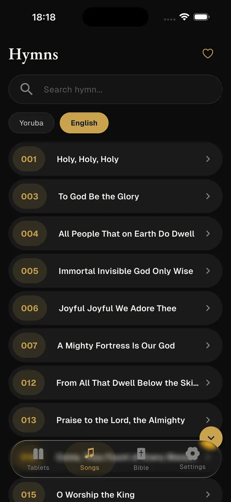
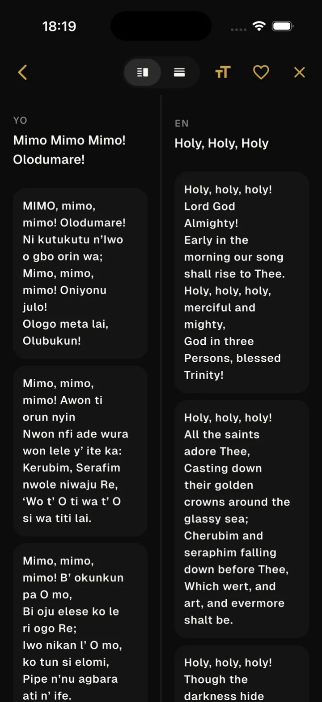
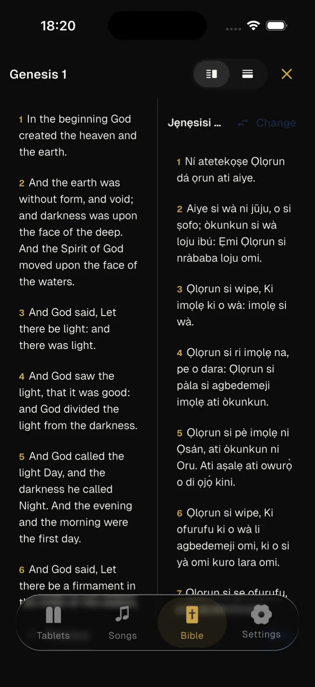
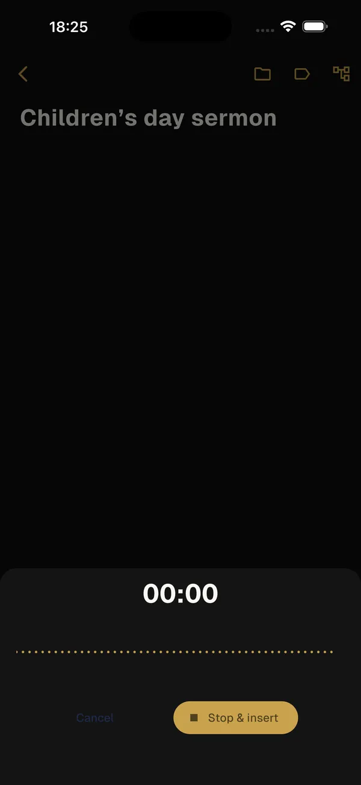

Abide brings a growing library of songs and hymns, a multi-edition Bible reader, and sermon notes into one calm, offline app. Read side by side across languages, sing along, and reflect anywhere, no internet required.


Built for the pew and the prayer closet alike: fast, focused, and fully usable without a signal.
The full song, hymn, and Bible library lives on your device. No data, no buffering. It works in remote areas and crowded sanctuaries alike.
Tap split on any hymn or chapter and the other language opens beside it in one move. Flip between side by side and stacked to match how you read.
Read multiple editions in one place, side by side when you want to compare. Chapter navigation remembers exactly where you left off.
Capture sermon notes in a rich editor and record voice memos inline, then tag and organize them so nothing slips away.
Turn a stanza or favorite verse into a beautiful card in your chosen color and share it to any chat in a tap.
Light, dark, or system theme, adjustable font size for easy reading, and a default language that fits how you worship.
Read two editions side by side in a single tap, or switch any chapter to stacked when you want one above the other. Abide keeps your place across editions, books, and chapters, so you open right where you stopped.


Type your reflections in a clean editor, or hit record and drop a voice memo straight into the note. Organize everything with folders and tags so Sunday's message is there when you need it.
Abide is in closed testing on the Play Store, with iOS on the way. Access is added manually by email, and Google doesn't notify you when you're in. Leave your email and a WhatsApp number so I can reach out directly to let you know you've been added and to hear your feedback. Abide is a free, open-source project I build in my free time, and I'd genuinely value your thoughts.
Please check back within 24 hours using the link below to download Abide on your Android device. If you left a number, I'll also reach out once you've been added.
One more thing — join our WhatsApp group to share feedback, ask questions, and hear about updates first.
Join the WhatsApp groupJoin our WhatsApp group to share direct feedback, report bugs, and hear about updates as we roll them out.
Join the WhatsApp groupAbide is a free, open-source project I work on each weekend. Whether you write code, design, or just have an idea, there's room for you.
Flutter, Riverpod, clean architecture. Pick up an issue and ship a feature or fix.
UI/UX and graphic designers, help refine screens, icons, and share cards.
Got a feature in mind? Open an issue and let's talk it through.